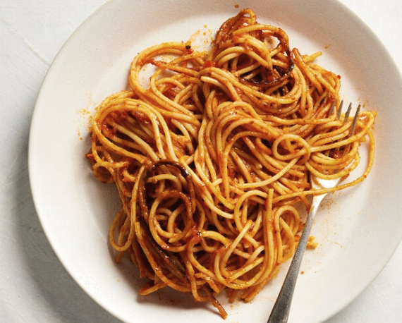

Spaghetti
A picture of spaghetti.
How to Make Spaghetti Step-By-Step
Here's a very brief overview of what you can expect when you make homemade spaghetti:
Ingredients:
- Meat: This super meaty spaghetti has sweet Italian sausage and lean ground beef.
- Onion and garlic: An onion and two cloves of garlic are cooked with the meat to add tons of flavor.
- Tomato products: You'll need a can of crushed tomatoes, two cans of tomato sauce, and two cans of tomato paste.
- Sugar: Two tablespoons of white sugar add subtle sweetness and enhance the flavor of the sauce.
- Spices and seasonings: This spaghetti recipe is flavored with fresh parsley, dried basil leaves, salt, Italian seasoning, fennel seeds, and black pepper.
- spaghetti noodles: Use store-bought or homemade spaghetti noodles.
- Cheeses: Parmesan, mozzarella, and ricotta cheese make this spaghetti extra decadent.
- Egg: An egg helps bind the ricotta so it doesn't ooze out of the spaghetti when you cut into it.
Steps:
- Make the meat sauce.
- Cook the noodles.
- Make the ricotta mixture.
- Layer the spaghetti according to the recipe instructions.
- Cover with foil and bake.
- Let the spaghetti rest before serving.
< Back